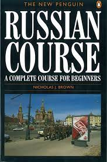

Something about recent paper. Have nobel prizes been awarded incorrectly before? Googling suggests YES
|  | Why I started learning Russia, and a review of Duolingo |
I played in my first rated chess tournament for three years over the weekend. This was the Kidlington Congress. It was the first time the congress had been held since the coronavirus pandemic, and has been sorely missed. Over 170 players participated, and they were split up into four sections (Open, Major, Intermediate, and Minor). I took part in the Major section, which has an upper rating limit of 2000. As my rating is only 1817, I was expected a tough time, and so it proved. My three opponents on the first day where rated between 100 and 150 points above me. After more than 10 hours of play, I had managed to draw two games, but lost the third. My final game finished after 10 p.m. leaving me little time to catch the buses home, make lunch for the next day and then hit the sack in anticipation of an early start.
After a tough first day playing much stronger opponents, I was hoping that the draw would be kinder to me on the second day. My hopes were immediately dashed whenI was paired as black against a player rated 1970. It got worse when he uncorked an opening trap in the Closed Sicilian, that I had never seen before, although I had successfully played the same position many times before. After only 9 moves, I was in deep trouble and had to resign 7 moves later. After the game, my opponent offered a post-mortem in the analysis room, where we went over the game, and he provided a lot of insight and advice. Apparently, top players no longer play 4 ...g6 since this trap was discovered about 15 years ago. My game can be seen here, but it also interesting to see this game where Hou Yifan used the same trap to beat Pia Cramling. I'm not sure whether it makes my feel better to know that a full FIDE GM also got smashed by this trap. I also found this game where David Zakarian also fell into the same trap and despite reaching a position where stockfish says he is 6.3 pawns down, he somehow managed to turn it round and win!
At least it was a quick defeat and gave me time to recover, particularly as I had three gruelling three hours games on on the preceding day. I took the opportunity for a very pleasant 9000 step walk past St.Mary's church and along the River Cherwell. I managed to get a good view of a fallow deer, but it bounded off through the trees before I managed to take a photo.
My final game of the day was against a member of my Cowley 2 team. I was a little anxious as he was a new member to our club and I didn't have a clear idea of his strength. In the end I didn't need to worry, as he had a nightmare game. First he dropped a knight on move 5, and then on move 14, he picked up a bishop intending to place it on g7, when he realised that I could immediately take it. He held on to the bishop whilst he thought longer, but when he realised that there was no legal alternative move, he resigned.
Overall, I thought that the congress was excellent. Everything went very smoothly and I enjoyed meeting up with other local players that I hadn't seen for a while. I chatted with the organizers as I knew most of them, and they sent that there hadn't been any major issues. The only down side, when comparimg it with previous congresses, was that there wasn't a bookshop, and that the analysis room was smaller and sometimes there was no available space. Unfortunately, the owner of the bookshop previously used has now retired, and the bar area, which used used in previous congresses as space for analysis has since beenconverted to a storeroom.
After spending a frustrating couple of hours trying to help YR use DVI builder to update their wordpress site, and having DRR remind me that github provides some web space, I decided to have a go and try it out. I was only looking for a minimal presence and am more than happy just to handcraft some html and css, so it looks like a good option, particularly as I already have a github account.
Setting up was very easy. For my github username of davidwrobson, I had to create a new git repository called davidwrobson.github.io, choosing the option to create a default README.md file. I then had to navigate to Settings and then Pages and then under Build and deployment, set "Branch" to "main" and the "folder" to "/ (root)"
Now, under the Code section, it tells me, ...
davidwrobson.github.io This repository can bedownloaded by "git clone git@github.com:DavidWRobson/davidwrobson.github.io.git" The web pages are available at https://davidwrobson.github.io/
the typo is theirs not mine!
After that, it all works. I already have git installed on my linux laptop, and already have my ssh public key installed on github. Now I can update myweb space with local edits followed by git commits and pushes. The web space is then visible at https://davidwrobson.github.io/. It can take up to 10 minutes for the web space to be updated after a git push. I can view my usage here.
Interestingly, the .io internet domains are for the British Indian Ocean Territories, which according to Wikipedia, has a permanent population of one. He or she must be very busy just managing the domain!